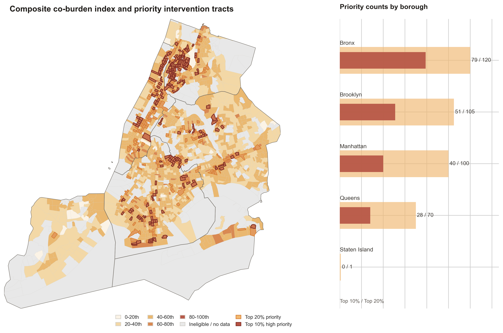
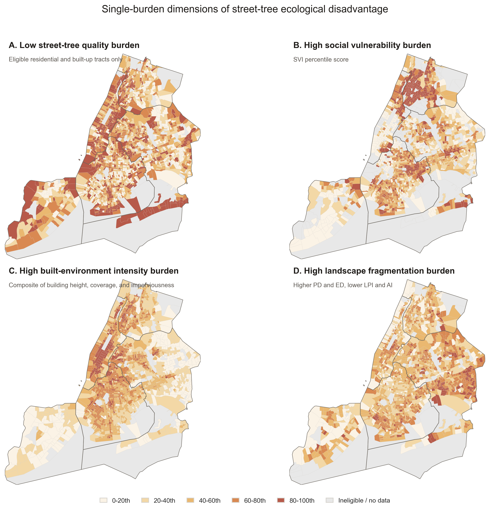
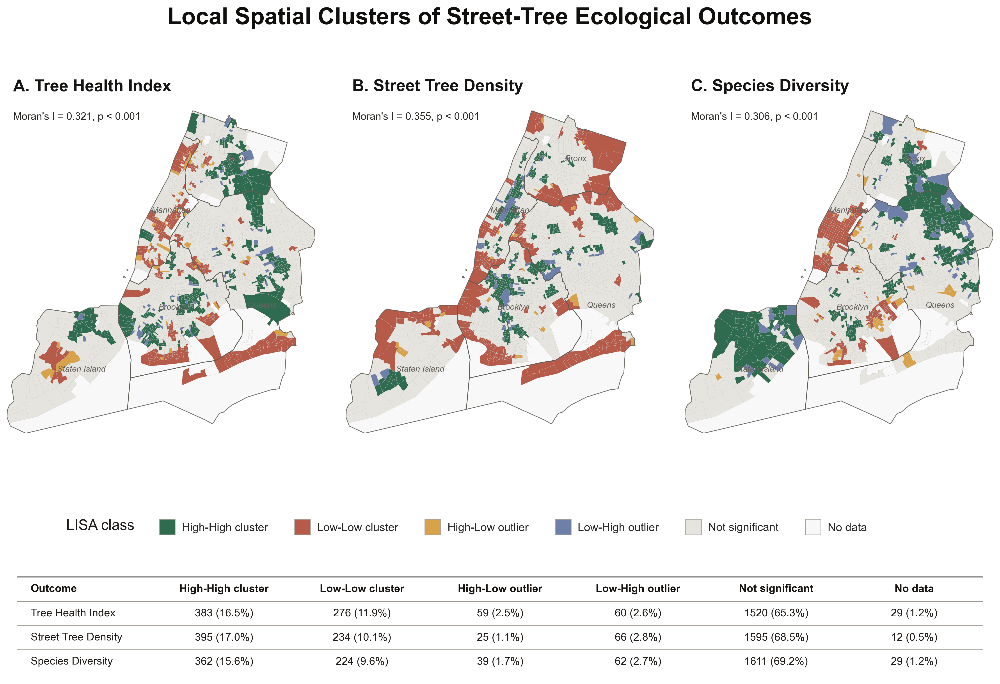
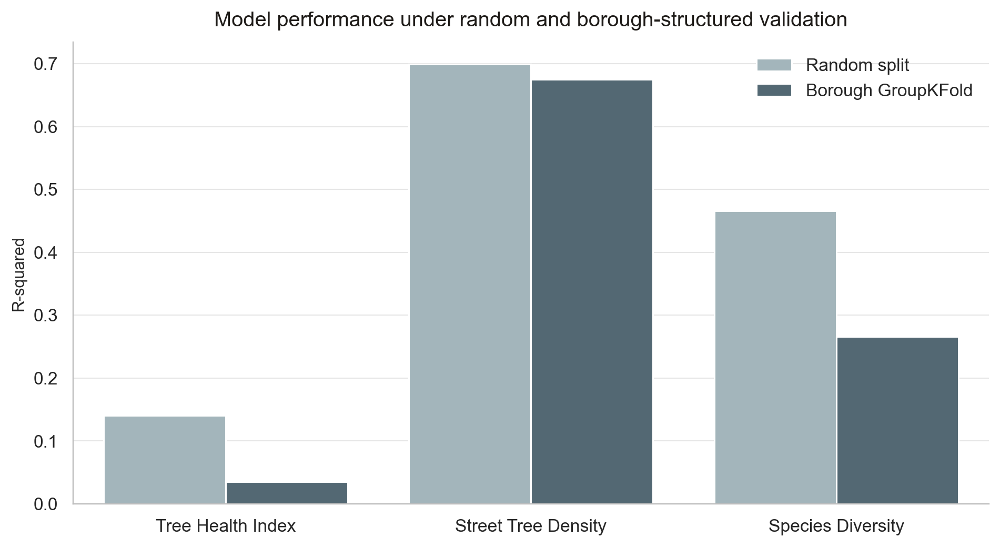

{kind=link}
Introduction
Street trees provide cooling, stormwater control, air-quality benefits, and everyday environmental amenities, but these benefits are not evenly distributed across New York City.
This project asks whether street-tree ecological quality varies systematically across the city, how those patterns relate to socioeconomic vulnerability and built-environment intensity, and where multiple disadvantages overlap. The analysis uses census tracts as the unit of comparison because they support integration with American Community Survey and Social Vulnerability Index data while still capturing meaningful intra-city variation.
Methods
The workflow combines street-tree inventory records, land cover, building morphology, parks, parcel attributes, and socioeconomic vulnerability into a tract-level dataset.
Data integration
Seven datasets were harmonized by census tract GEOID: NYC 2015 Street Tree Census, UrbanWatch land cover, building footprints, PLUTO, parks properties, ACS 2019, and CDC/ATSDR SVI.
Street-tree outcomes
Tree Health Index averages Good/Fair/Poor scores, tree density measures trees per square kilometer, and Shannon diversity captures tract-level species richness and evenness.
Built and landscape context
UrbanWatch PLAND, impervious cover, building height, coverage, density, parks area, and FRAGSTATS-style metrics describe 2D and 3D urban structure.
Spatial analysis
Global Moran's I tests citywide spatial autocorrelation. Local Moran's I identifies High-High, Low-Low, and spatial outlier clusters for health, density, and diversity.
Models
OLS and spatial econometric models provide interpretable baselines. Random Forest, CatBoost, XGBoost, permutation importance, and SHAP diagnose predictive structure.
Co-burden index
Low street-tree quality, high social vulnerability, high built-environment intensity, and high landscape fragmentation are percentile-scaled and averaged to identify top 20% and top 10% priority tracts.
Results
Street-tree ecological inequality in NYC is multidimensional. Tree supply, species diversity, built intensity, social vulnerability, and canopy fragmentation do not produce the same map, but their overlap reveals clear priority corridors.
- Tree health is generally high citywide, but low-health clusters appear in lower Manhattan and parts of south Brooklyn and south Queens.
- Street tree density has a weak but significant positive relationship with income, while mean building height has a stronger negative association with Tree Health Index.
- Staten Island has the highest average tree canopy PLAND and lowest impervious surface, while Manhattan has the lowest canopy and highest impervious cover.
- Global and local spatial autocorrelation show that health, density, and diversity form spatial clusters rather than random tract-by-tract differences.
- The composite priority map concentrates high co-burden tracts in the Bronx, northern Manhattan, and parts of central Brooklyn.




Interactive decision-support atlas
The atlas lets users switch between single-burden layers, the composite co-burden index, priority tracts, and LISA cluster outputs. It is designed for citywide screening, borough comparison, tract inspection, and field-verification planning.
Limitations
The results are decision-support evidence, not a causal proof of why every tract has its observed street-tree condition.
Temporal mismatch
The workflow combines datasets from 2015 to 2020. It captures broad spatial relationships, but not year-by-year ecological change or post-planting trajectories.
Spatial aggregation
Census tracts support socioeconomic integration, but they smooth street-scale variation in tree pits, sidewalks, maintenance, and microclimate. This creates MAUP risk.
Unobserved mechanisms
Soil quality, rooting volume, irrigation, pruning, pest pressure, and maintenance records were not available. These factors likely matter for tree health.
Street-tree scope
The Tree Census measures mapped street trees, not every tree or canopy patch in the city. Street-tree quality and total canopy cover should not be treated as the same outcome.
Cleaning choices
Alive trees were retained, extreme DBH values were capped, sentinel values were recoded to missing, and water-dominant or low-residential tracts were treated carefully to avoid false high-burden classifications.
Index assumptions
The co-burden index uses percentile scaling and equal weighting. Sensitivity tests show robust geography, but different policy priorities could justify different weights.
Spatial weights
LISA and spatial models depend on the selected KNN spatial weights. Cluster labels identify spatial association, not the mechanism causing that association.
Model interpretation
OLS, spatial models, and ML feature importance describe associations and predictive contribution. They should guide hypotheses and planning, not be read as causal estimates.
Conclusion
NYC street-tree inequality is best understood as overlapping ecological, social, and morphological pressure rather than a simple question of tree counts.
Street Tree Density and Species Diversity are relatively well explained by tract-level land cover, built-environment intensity, and landscape configuration. Tree Health Index is less well explained by these tract-level variables, suggesting that fine-scale maintenance, rooting conditions, and street habitat quality remain important unobserved drivers.
High-priority co-burden areas concentrate in parts of the Bronx, northern Manhattan, and central Brooklyn. These tracts should not be interpreted simply as places that need more trees. They are zones where urban forestry investment should combine planting feasibility, tree-pit expansion, structural soils, permeable pavement, canopy connectivity, long-term maintenance, and environmental justice-oriented resource allocation.